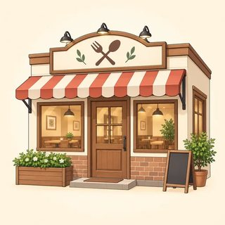
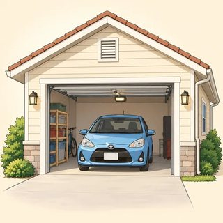

Advanced Structures — Classroom Materials
Everything to print for Classes C7–C9: flashcards (passive patterns, services, participles, places, reporting verbs by pattern), new identity cards, the Newsroom A/B story cards and bulletin frame, the Editor's Desk drafts and combine-and-reduce strips, the Spot the Difference scenes, the Meeting role cards and minutes sheet, the Report It! board game, and the teacher's listening scripts.
What to Print
| Set | What | How many | Used in |
|---|---|---|---|
| A | Flashcards: passive patterns + services (pictures), participles + places (pictures), reporting verbs color-coded by pattern | 1 set for the board (+1 spare set of verb cards per pair for sorting in C9) | C7, C8, C9 |
| B | New identity cards (6) | 1–2 sets, on a side table | C7, C8, C9 |
| C | Newsroom A/B story cards (6 stories) + bulletin frame | 1 set · 1 frame per pair | C7 |
| D | Editor's Desk drafts (4) + combine-and-reduce strips (12) + strip answer card | 1 draft per group of 3 · 1 envelope of strips per pair | C8 |
| E | Spot the Difference scenes (2 × A/B) | 1 A/B pair per pair of learners | C8 (or C9 warmer) |
| F | Meeting role cards (3 meetings × 4 roles + minute-taker) + minutes sheet | 1 meeting per group of 4–5 · 1 sheet per learner | C9 |
| G | Game: Report It! board | 1 board per group of 3–4 + a die and counters | C9 early finishers · C10 warmer |
| H | Listening & dictation scripts | Teacher only | C7, C8, C9 |
A · Flashcards — Passive Patterns & Services (3.1)
Stick the pattern cards on the board as you build Pattern A and B and the timing strip. Use the service pictures for the five-minute causative stage: hold one up, learners say "I had / got my… …ed."


A · Flashcards — Participles & Places (3.2)
Hold the "does / receives" cards up during the drill. For the place cards, cover the word, read the clue aloud (every clue has a reduced clause), and let learners guess. Then learners write their own clue for a card.






A · Flashcards — Reporting Verbs by Pattern (3.3)
The colored top edge shows the pattern: ① + to · ② + person + to · ③ + (that) · ④ + -ing · ⑤ + preposition + -ing. Print one set for the board and one spare set per pair for the sorting task. Verbs that fit two patterns (admit, deny, insist) have a card in each color.
B · New Identity Cards (3.1 · 3.2 · 3.3)
Any learner may use a card instead of their own life, in any task: no reason needed. In 3.1 they use the rumors and the things I had done (journal, drill). In 3.2 they describe the place I know well with participle clauses. In 3.3 they report the conversation from my week.
Marta — hotel receptionist
Rumors at work: "People say the hotel is going to be sold." · "Everyone thinks the new chef worked in Paris."
Things I had done: my hair cut last week · my phone screen fixed
A place I know well: the hotel lobby: a big room decorated with plants, full of guests waiting for taxis
A conversation this week: My manager: "Can you work on Saturday?" Me: "Sorry, I can't." · A guest: "I didn't order this pizza!"
Kwame — delivery driver
Rumors at work: "Everyone says we're getting electric vans." · "People think the boss is retiring."
Things I had done: my van serviced on Monday · a new key cut
A place I know well: the warehouse: a huge building filled with boxes, open all night
A conversation this week: A customer: "You're late!" Me: "I'm sorry. There was an accident on the highway." · My friend: "Let's play soccer on Sunday."
Ana — nursing assistant
Rumors at work: "People say a new clinic is being built next door." · "Apparently the cafeteria is closing."
Things I had done: my eyes tested · my uniform altered
A place I know well: the staff room: a small room with a window facing the park
A conversation this week: My coworker: "I'll cover your shift on Friday." · My son: "I didn't eat the last cookie!"
Farid — warehouse supervisor
Rumors at work: "Everyone says the company is moving to a bigger building." · "People think the forklift was damaged on purpose."
Things I had done: my car repaired · my passport renewed
A place I know well: the loading dock: a noisy place full of trucks waiting to be unloaded
A conversation this week: A worker: "OK, I broke the pallet. It was my fault." · My manager: "Don't forget to send the report."
Mei — school cafeteria cook
Rumors at work: "People say the school is getting a new kitchen." · "Apparently the principal loves our soup."
Things I had done: the kitchen sink fixed · my knives sharpened
A place I know well: the school kitchen: a bright room filled with big pots, smelling of fresh bread
A conversation this week: A student: "Can I have more rice, please?" · My coworker: "Why don't we make tacos on Friday?"
José — retired carpenter and volunteer
Rumors in my building: "Everyone says the elevator will be replaced." · "People think the new neighbors are musicians."
Things I had done: my shoes repaired · the windows cleaned
A place I know well: the community garden: a quiet place surrounded by old trees
A conversation this week: My neighbor: "Congratulations on your new grandson!" · My daughter: "No, Dad, I'll pay for lunch. I insist."
C · Newsroom — A/B Story Cards (3.1)
All six stories are invented and take place in the invented town of Riverside. Give one pair one story: A gets "What people are saying" (rumors → report them with Pattern A or B), B gets "Official facts" (→ ordinary passives in different tenses). They share orally, then write a six-sentence bulletin on the frame. The small gray model at the bottom of each B card is for you: fold it back or cut it off before class.
The giant sandwich
- "Everyone says the sandwich is longer than a football field."
- "Apparently it took all night to make."
- "People think it'll get into the record books."
- "My neighbor says the bread was baked by Rosa's bakery on Elm Street."
The giant sandwich
- Made in Riverside Park last night by 40 volunteers from the community center.
- Measures more than 300 feet.
- An official judge will measure it on Friday.
- It will be cut into 1,000 pieces and shared with visitors. Tickets: buy in advance!
The mystery mural
- "People say a famous street artist painted it."
- "Apparently it was painted in one night!"
- "Everyone thinks it's worth thousands of dollars."
The mystery mural
- A bus driver discovered it on the wall of the old Elm Street bakery at 6 a.m. on Tuesday.
- Someone has contacted the building's owner.
- A glass screen will protect it.
- Rule for visitors: you must not touch it.
The ring in the carrot
- "Everyone says Mrs. Kim lost the ring ten years ago."
- "Apparently a carrot grew right through it!"
- "People think she cried when she saw it."
The ring in the carrot
- A volunteer found a gold ring on Sunday in the Green Street Community Garden.
- A jeweler has cleaned it, and the garden has returned it to its owner, Mrs. Kim.
- The garden office will keep the carrot.
- The garden will open to visitors on Saturday.
The talking parrot
- "People say the parrot speaks five languages."
- "Apparently it learned them from customers at a restaurant."
- "Everyone thinks it's about 40 years old."
The talking parrot
- Someone brought the parrot to the Riverside Animal Shelter last month.
- The staff have named it "Professor."
- A volunteer vet is looking after it at the moment.
- Rule: send adoption forms by Friday.
The million-mile bus driver
- "People say Mr. Ortega knows every passenger's name."
- "Apparently he has never been late. Not once!"
- "Everyone thinks he's going to open a café."
The million-mile bus driver
- Luis Ortega has driven the Number 9 bus for 32 years with no accidents.
- The city will honor him on Friday.
- The city is going to name a new bus after him.
- The ceremony: main bus station, 12 noon.
The Palace Theater
- "People say the old theater is haunted."
- "Apparently there'll be free popcorn on opening night."
- "Everyone thinks the first movie is a secret classic."
The Palace Theater
- The city closed the theater in 2019.
- Local volunteers have repaired and repainted it.
- It will reopen on June 1.
- You can buy tickets online or at the library.
Bulletin frame (1 per pair)
Headline: ______________________________________________
| 1 | |
|---|---|
| 2 | |
| 3 | |
| 4 | |
| 5 | |
| 6 |
☐ Pattern A: It is said / believed / expected that… · ☐ Pattern B: … is thought to be / to have… · ☐ a modal passive (must be, will be, can be) · ☐ another tense (has been, is being) · ☐ to have + pp for an earlier action · Editor's initials: ____
D · Editor's Desk — Drafts & Combine-and-Reduce Strips (3.2)
Each draft is about 100 words. The task: 60 words or fewer, every fact kept, at least 4 participle clauses, no danglers. Model versions are in the answer key.
Maple Street Community Center
The Maple Street Community Center is next to the library. The center was built in 1975. It was repainted last summer. The center offers free English classes. The classes are taught by volunteers. The volunteers come from the neighborhood. People who want to join a class should register at the front desk. The front desk is open from 9 a.m. to 5 p.m. Children who are under 12 must come with an adult. The center also has a computer room. The computer room was donated by a local bank. Visitors who are using the computers must sign in first.
The Captain's Teapot
This is a teapot. It was made in England. It was made in 1820. The teapot was owned by a sea captain. The captain lived in Riverside. He carried the teapot on all his voyages. The teapot is decorated with blue flowers. The flowers were painted by hand. The teapot was found in an attic in 1998. It was found by a family. The family had bought the captain's old house. The family gave the teapot to the museum. Visitors who are interested in the captain can see his map in Room 3. The map is displayed next to his compass.
Rosa Mendes, Baker
Rosa Mendes is a baker. She owns a bakery on Elm Street. She was born in Brazil. She moved to Riverside in 2005. She didn't speak English at first. So she took evening classes. She worked in a hotel kitchen for six years. She saved her money. Then she opened her own bakery in 2012. Her bakery sells bread. The bread is made with her grandmother's recipe. People who live across town drive to Elm Street for it. Today Rosa employs three students. The students are studying cooking at the community college.
Apartment for Rent
This apartment is for rent. The apartment is on the third floor. The building was built in 2010. The apartment has two bedrooms. The bedrooms face the park. The kitchen was renovated last year. The kitchen has a new fridge. The fridge is included in the rent. Tenants who have pets are welcome. Tenants who want parking can rent a space. A parking space costs $50 a month. People who are interested should call Mr. Brown. Mr. Brown is the building manager. He lives in apartment 1A.
Combine-and-reduce strips (cut apart · 1 envelope per pair)
1 The woman standing by the door is my neighbor. · 2 The bridge built in 1890 is closed for repairs. · 3 Walking to work, I found a wallet. · 4 Not knowing anyone at the party, she felt shy. · 5 Having finished his shift, he went straight home. · 6 The bus leaving at 7:15 is always full. · 7 The cake made by my aunt won first prize. · 8 Surrounded by mountains, the village feels very quiet. · 9 Having lost the map, they asked a farmer for directions. · 10 Anyone wanting a refund should keep the receipt. · 11 The letters sent last week never arrived. · 12 Feeling hungry, I stopped at a food truck parked outside the station. Accept any correct alternative (e.g., 2 Built in 1890, the bridge is closed for repairs.).
E · Spot the Difference — Scene Cards (3.2)
Pairs. A and B have the same scene with five differences. They take turns describing one thing at a time with reduced clauses ("I can see a man wearing a red cap, standing at the bus stop."). The partner says "Same!" or "Different! In my scene…". No showing. Differences are listed below the cards for you.
Riverside Square, Saturday morning
- A man wearing a red cap is standing at the bus stop.
- A café called "Sunny Side" has three tables placed outside.
- A dog tied to a lamp post is barking at a pigeon.
- Two children eating ice cream are sitting on the library steps.
- A bicycle painted bright yellow is leaning against a tree.
- A woman carrying a box of tomatoes is crossing the street.
- A sign written in big letters says "Farmers' Market Today."
- A food truck parked near the fountain is selling tacos.
Riverside Square, Saturday morning
- A man wearing a blue cap is standing at the bus stop.
- A café called "Sunny Side" has three tables placed outside.
- A cat sitting on a wall is watching a pigeon.
- Two children eating ice cream are sitting on the library steps.
- A bicycle painted bright green is leaning against a tree.
- A woman carrying a box of tomatoes is crossing the street.
- A sign written in big letters says "Farmers' Market Tomorrow."
- A food truck parked near the fountain is selling pizza.
Platform 2, Monday, 8:15 a.m.
- A man reading a newspaper is sitting on a bench.
- A clock hanging above the ticket office shows 8:15.
- A woman pushing a stroller is waiting by the elevator.
- A train painted silver and blue is arriving.
- Three students carrying guitars are standing near the stairs.
- A suitcase with a pink ribbon tied to the handle is next to the bench.
- A man selling coffee from a cart is laughing.
- A poster showing a beach is on the wall.
Platform 2, Monday, 8:15 a.m.
- A man reading a book is sitting on a bench.
- A clock hanging above the ticket office shows 8:15.
- A woman pushing a shopping cart is waiting by the elevator.
- A train painted silver and blue is arriving.
- Two students carrying guitars are standing near the stairs.
- A suitcase with a pink ribbon tied to the handle is next to the bench.
- A woman selling coffee from a cart is laughing.
- A poster showing mountains is on the wall.
Differences — Scene 1: red / blue cap · dog tied to a lamp post barking / cat sitting on a wall watching · yellow / green bicycle · "Today" / "Tomorrow" · tacos / pizza. Scene 2: newspaper / book · stroller / shopping cart · three / two students · a man / a woman selling coffee · beach / mountains poster.
F · The Meeting — Role Cards (3.3)
One meeting per group of 4 (A = the chair). In a group of 5, add the minute-taker card. Every meeting contains all six target functions (suggest, insist, deny, admit, agree, refuse). Learners say their moves naturally, in their own words, and play the card, not themselves.
Riverside Apartments: the summer block party
The residents' committee is planning a party for everyone in the building. Agree on a date, a place and who does what.
You are Pat Chen, the committee chair. Open: "OK, let's start. We're here to plan the block party."
- SUGGEST the last Saturday in July, 4 to 9 p.m.
- REMIND everyone to bring one dish to share.
- Close: "So, we agree that…"
Turn rule: nobody speaks twice before everyone has spoken once.
Riverside Apartments: the summer block party
The residents' committee is planning a party for everyone in the building.
You are the building manager.
- REFUSE: people can't use the parking lot. The cars need it.
- AGREE: you'll lend tables and chairs from the basement.
- DENY: someone says you canceled last year's party. You didn't! It was the rain.
Riverside Apartments: the summer block party
The residents' committee is planning a party for everyone in the building.
You live in apartment 2C and you love music.
- INSIST: there must be live music. You'll play the guitar yourself. No argument!
- ADMIT: you forgot to share the photos from last year's party.
- OFFER: to make posters for the party.
Riverside Apartments: the summer block party
The residents' committee is planning a party for everyone in the building.
You live in apartment 5A and you start work early on Sundays.
- ADMIT: you're a little worried about the noise.
- SUGGEST finishing by 8 p.m. and using the courtyard, not the street.
- AGREE: you'll organize the food table.
Brightside Café: staff meeting
Two problems: the summer weekend schedule, and the coffee machine, which broke on Saturday.
You are Alex, the manager. Open: "Thanks for staying late. Two things today…"
- SUGGEST a rotating weekend schedule: everyone works two weekends a month.
- REMIND everyone to clean the coffee machine every night.
- Close: "OK, so we've agreed that…"
Turn rule: nobody speaks twice before everyone has spoken once.
Brightside Café: staff meeting
Two problems: the summer weekend schedule, and the broken coffee machine.
You are Sam, a barista.
- REFUSE to work on Sunday mornings. You have a class.
- OFFER to work Saturday evenings instead.
- AGREE to the rotating schedule, if your Sunday mornings are free.
Brightside Café: staff meeting
Two problems: the summer weekend schedule, and the broken coffee machine.
You are Jo, a barista.
- DENY breaking the coffee machine. It was already making a strange noise on Friday.
- INSIST on calling a repair company. Nobody should try to fix it themselves!
- COMPLAIN that the new cups are too small.
Brightside Café: staff meeting
Two problems: the summer weekend schedule, and the broken coffee machine.
You are Lee, the cook.
- ADMIT: you forgot to clean the machine on Friday night.
- APOLOGIZE for the mess you left in the kitchen.
- AGREE to cover Sam's Sunday shift.
Green Street Community Garden: August watering
Many members are away in August, but the plants need water every day. Decide who waters, and how people sign up.
You are Robin, the garden coordinator. Open: "OK, everyone, the August problem…"
- SUGGEST an online sign-up sheet for watering days.
- WARN everyone not to water at midday. The sun is too hot.
- Close: "So, it's agreed that…"
Turn rule: nobody speaks twice before everyone has spoken once.
Green Street Community Garden: August watering
Many members are away in August, but the plants need water every day.
You are a retired member. You're in the garden every day.
- AGREE to water on Mondays and Thursdays.
- REFUSE to use an online sheet. You don't use the internet.
- INSIST on a paper sheet on the garden gate.
Green Street Community Garden: August watering
Many members are away in August, but the plants need water every day.
You are a parent with two young children.
- DENY picking other members' tomatoes. It was the birds!
- ADMIT: you forgot to water your plot last August.
- OFFER to bring your children to help on Saturdays.
Green Street Community Garden: August watering
Many members are away in August, but the plants need water every day.
You are a new member.
- ADMIT: you don't know how to use the watering system.
- SUGGEST a short training session for new members.
- AGREE to water every weekend in August.
You take the minutes
Don't speak during the meeting. Listen and write: who was there, what each person did (suggested, refused, admitted…) and the decision.
At the end, read your minutes aloud. The group corrects you: "No, I didn't refuse! I agreed to do it on Tuesday!"
Use at least six different reporting verbs. No said or told.
Five patterns
① + to: agree, offer, promise, refuse · ② + person + to: advise, warn, remind, persuade · ③ + (that): admit, explain, claim, insist, complain · ④ + -ing: deny, admit, suggest, recommend · ⑤ + prep + -ing: apologize for, accuse sb of, insist on, blame sb for
🚫 suggested me to · apologized to be · I am agree
Minutes sheet (1 per learner)
Meeting: ______________________ · Date: ___________ · Present: ______________________________
The problem: ______________________________________________
| Who? | Verb + pattern (①–⑤) | What they did |
|---|---|---|
Decision: It was agreed that ________________________________________
Checked by: ________ · ☐ 6+ different verbs · ☐ no said / told · ☐ no "suggested me to" · ☐ backshift in that-clauses
G · Game — Report It! (3.3 · C10 warmer)
How to play (groups of 3–4, one die, one counter each): roll and move. Read the line on your square aloud, then report it with one precise verb in the correct pattern ("She offered to help me move on Saturday."). The group checks with the cheat-sheet. Correct: stay. Wrong: go back 1. FIX IT squares: correct the sentence. PATTERN squares: say the pattern for three verbs. said and told are not allowed. First to FINISH wins. Squares go in a snake: 1–6 left to right, 7–12 right to left, and so on.
| 1START | 2"I'll help you move on Saturday." | 3"No, I won't lend you my car." | 4"I didn't eat the last cookie!" | 5"Why don't we take the train?" | 6"Sorry I forgot your birthday." |
| 12"Yes, OK, I left the door open." | 11"Congratulations on your new job!" | 10"OK, fine, I'll do the dishes." | 9"Don't forget to pay the electric bill." | 8"You broke my headphones!" | 7FIX IT She suggested me to call. |
| 13"You should see a doctor." | 14FIX IT He apologized to be late. | 15"Don't touch the oven. It's hot!" | 16"No, really, I'll pay for dinner." | 17"Try the fish tacos. They're amazing." | 18"I'll call you tomorrow. I promise." |
| 24"Come on, you should apply for the job!" | 23"The package was sent to the wrong address, you see." | 22FIX IT They accused him to take the money. | 21"Would you like to come to my party?" | 20"It's your fault we missed the bus!" | 19PATTERN deny · refuse · remind |
| 25"I paid the bill! I definitely paid it." | 26"Let's not talk about work tonight." | 27FIX IT She reminded to lock the door. | 28"Don't invest in that company." | 29"If you're late again, I'll call your manager!" | 30FINISH 🎉 |
2 offered / promised to help me move · 3 refused to lend me his car · 4 denied eating the last cookie · 5 suggested taking the train / suggested (that) we take · 6 apologized for forgetting my birthday · 7 She suggested calling / suggested that I call · 8 accused me of breaking her headphones · 9 reminded me to pay the electric bill · 10 agreed to do the dishes · 11 congratulated me on getting my new job · 12 admitted leaving / admitted (that) he had left the door open · 13 advised me to see a doctor · 14 He apologized for being late · 15 warned me not to touch the oven · 16 insisted on paying for dinner · 17 recommended trying the fish tacos · 18 promised to call me the next day · 19 deny + -ing / that · refuse + to · remind + person + to · 20 blamed me for making us miss the bus · 21 invited me to come to her party · 22 They accused him of taking the money · 23 explained (that) the package had been sent to the wrong address · 24 encouraged / persuaded me to apply for the job · 25 insisted (that) she had paid the bill / claimed (that) she had paid · 26 suggested not talking about work that night · 27 She reminded me / him to lock the door · 28 warned me against investing / not to invest in that company · 29 threatened to call my manager.
H · Listening & Dictation Scripts (teacher reads aloud)
Read at a natural speed. Read each script twice: once for the main idea, once to check. For the radio bulletin, use a calm, steady newsreader voice and pause after each story. For the meeting, change your voice for each speaker, or give the lines to three confident learners. The 🔊 buttons in the online lessons give learners extra listening at home.
3.1-A · Riverside Community Radio, the three o'clock news (Workbook 3.1, Ex 1)
Answers: 1 is thought to be · 2 was found · 3 is believed to have been left · 4 has been asked · 5 was returned · 6 is said to have been borrowed · 7 will be held. Extra passives to notice: is being planned · will be charged. Follow-up: "Which facts are certain, and which are only beliefs?"
3.1-B · Dictation (read each sentence 3 times)
Check: been in 3 (often missed: learners hear "should've sent") and the word order had the roof repaired in 4.
3.2-A · Old Town audio tour (Workbook 3.2, Ex 1)
Answers: 1 Built · 2 standing · 3 Located · 4 painted · 5 Having climbed · 6 selling · 7 Surrounded.
3.2-B · Dangler or not? (learners show ✔ or ✘ · read each sentence twice)
Answers: ✔ 1, 3, 5, 6, 8 · ✘ 2 (the alarm walked?), 4 (the printer finished the report?), 7 (it was waiting?). In 6 the car really is covered in snow, so it's correct. Ask learners to fix 2, 4 and 7.
3.3-A · The Riverside Apartments residents' meeting (Workbook 3.3, Ex 1 · four voices)
Answers: 1 Ms. Park suggested · 2 Mr. Diaz denied · 3 Tom admitted · 4 Mr. Diaz refused · 5 Ms. Okafor agreed · 6 Tom insisted on · 7 Ms. Park reminded. Extra: Tom also apologized for leaving his clothes in the dryer.
3.3-B · Dictation (read each sentence 3 times)
Check the /ɪd/ syllable in suggested and admitted, and for being in 3. Ask: "Which pattern is each verb?" (④ · ① · ⑤ · ③)